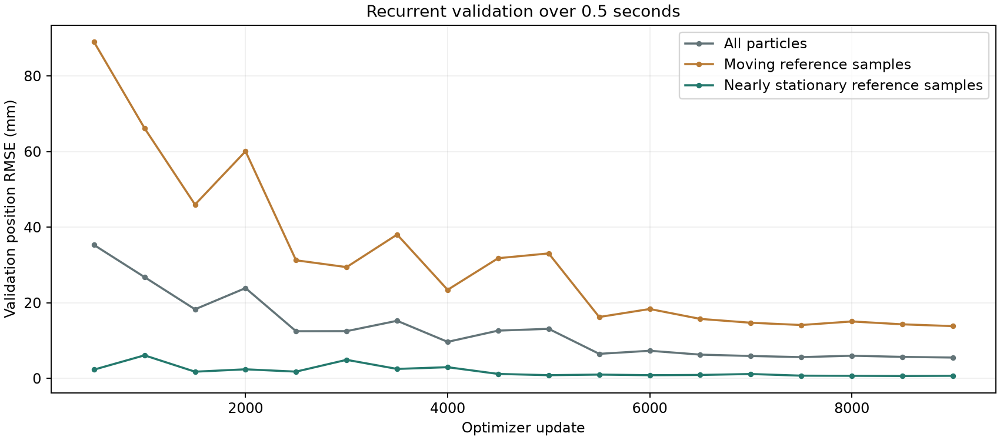
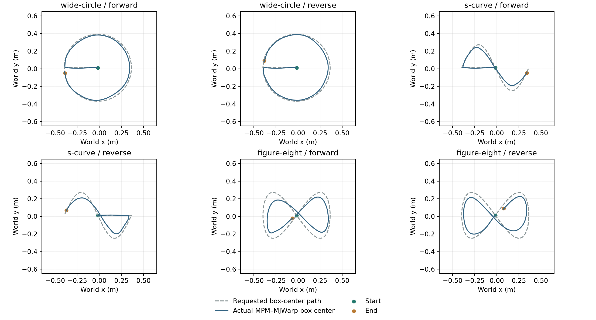
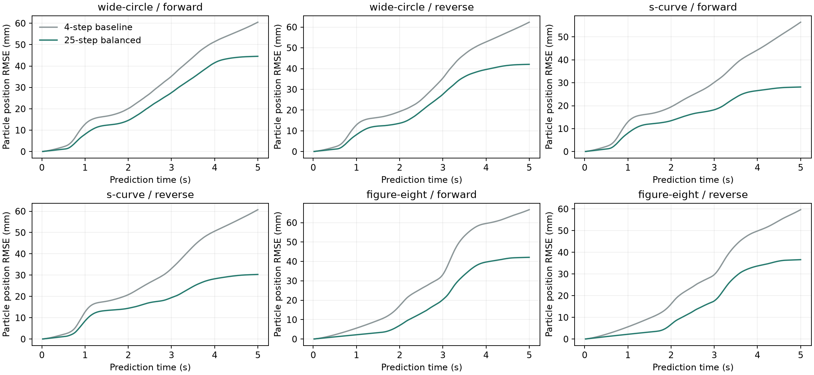

PARTICLE MOTION / RECURRENT TRAINING
Transolver: 0.5-second training horizon
Reduce unwanted motion of settled material while retaining particle motion caused by the rigid box.
Latest saved validation: update 10,000 / 10,000. Final evaluation is available below.
OSMO workflow · GPU resource usage · Task dashboard
Updated 2026-10-20 05:06 UTC. Refresh this page for new checkpoint measurements.
01 / Experiment
| Setting | Baseline | New experiment |
|---|---|---|
| Recurrent training horizon | 4 steps / 0.08 s | 25 steps / 0.5 s |
| Loss | Moving samples weighted 5×; other samples 1× | Separate group means, equal weight |
| Initialization | From scratch, seed 90516 | From scratch, same seed |
| Optimizer updates | 10,000 | 10,000 planned |
| Architecture / dataset split | Same Transolver (128 channels, 4 blocks, 4 heads, 64 slices); existing MPM episodes and unchanged splits | |
| Particle update | All particles; displacement-only output; no region selector | |
| Scene | 1 × 1 × 0.5 m initial material volume; 16,384 particles; 0.04 m MPM grid; rigid ground and one box; no enclosing walls | |
0.5 seconds is a first experimental horizon, not an established optimum. It exposes approximately six times more recurrent steps per update than the baseline. Equal optimizer counts do not imply equal training compute or particle-frame exposure. This experiment changes horizon and loss together; it does not isolate their individual effects.
02 / Training sequence and loss
Three reference position frames → predict displacement → update particle positions
↑ │
└── predicted history ──┘ × 25 steps
Compare all 25 predicted positions with their MPM reference positions.
Backpropagate through the full sequence; no history reset or detached steps.
| Reference group | Definition at each target step | Supervision |
|---|---|---|
| Moving | Reference displacement from sequence start >0.5 mm | Mean squared position error within this group |
| Nearly stationary | Reference displacement from sequence start ≤0.5 mm | Mean squared position error within this group |
L = 0.5 × mean_moving(||(x_pred − x_ref) / dt||²) + 0.5 × mean_stationary(||(x_pred − x_ref) / dt||²) dt = 0.02 s
Both groups retain their reference position targets. Nearly stationary does not impose exactly zero motion. If a sequence contains only one group, that group receives the full loss. The grouping is based only on reference motion and does not freeze predicted particles.
Each GPU trains on one sequence per update. Group normalization is applied within each sequence, then distributed training averages gradients. Recorded rigid-box pose and velocity are inputs at every step. Validation uses 32 fixed sequences at the same 25-step horizon. Checkpoint selection uses the square root of the average of the two pooled group mean squared position errors.
03 / Training progress
| Validation measure at 25 steps | Latest value |
|---|---|
| All particle-time samples | 5.128 mm |
| Moving reference samples | 12.889 mm |
| Nearly stationary reference samples | 0.556 mm |
| Balanced checkpoint-selection score | 9.122 mm |
Peak allocated PyTorch GPU memory on rank 0: 2.30 GiB. This excludes other processes and allocations outside PyTorch.

Do not compare these 25-step validation errors directly with the baseline's four-step validation error. Compare both models at the same evaluation horizon.
04 / Matched five-second evaluation
| Model | Complete trajectories | Mean final position RMSE | Displaced-particle final RMSE | Reference-stationary particles drifting >1 cm |
|---|---|---|---|---|
| Transolver: 4 steps, original loss | 12/12 | 50.70 mm | 78.34 mm | 95.4% (69,433/72,764) |
| Transolver: 25 steps, balanced loss | 12/12 | 20.93 mm | 42.95 mm | 29.4% (21,407/72,764) |
Position errors are means across complete trajectories. Displaced particles: reference initial-to-final displacement >1 cm. Reference-stationary particles: within 1 mm of their initial reference position throughout five seconds. Drift: predicted displacement >1 cm at any time. These evaluation groups differ from the training particle-time groups.
Selected checkpoint: update 10000. These are previously examined test trajectories; a fresh held-out test is still needed for an independent generalization claim.
05 / Prediction videos
Both comparison videos are complete.
Continuous dragging — trajectory 117
Pushing — trajectory 453
Left: MPM reference particles. Right: recurrent Transolver particles from the selected long-horizon checkpoint. Both views replay the same recorded box motion. Particle predictions are not reset to MPM. Brown particles, gray box, lighting, camera, and display radius match the baseline videos. This is particle prediction, not force-estimator-driven box motion.
06 / New box trajectories
Frozen-checkpoint tests: wider circular, S-shaped, and figure-eight paths, each in two traversal directions. No additional training. Circle target diameter: 0.76 m. S and figure-eight target spans: 0.76 × 0.52 m. Active dragging: 0.25–4.75 s within each five-second evaluation. A 0.75 s smooth lead-in moves the target from the settled box center to the path start; the requested path then runs from 1.00 to 4.75 s.
The reference box is dynamic in the MPM–MJWarp simulation. A bounded spring–damper force pulls its center toward a smooth target; the box pose is never assigned to the target. The plots distinguish the requested path from the actual box-center path. Each prediction replays the recorded actual box motion while advancing its own particle state.
Unchanged 1 × 1 × 0.5 m initial material volume, 16,384 particles, 0.04 m MPM grid, rigid ground, and 0.12 × 0.12 × 0.08 m box. All six tests use the same material/jitter seed and 7.5 kg box. All boxes start and settle at the bed center; initial velocities are zero. Applied force acts at the box center. These differ from the random initial box states and off-center dragging anchors used in training.
Moving-particle displacement RMSE per 20 ms step: 2.37 → 2.09 mm, averaged over the six trajectories. Reference-stationary particles drifting more than 1 cm: 97.1% → 31.6%, pooled across all six trajectories. The improvement is encouraging, but the per-step gain is modest and stationary drift remains substantial.
| Path / direction | Final particle position RMSE 4-step → 25-step model | Moving-particle displacement RMSE per step 4-step → 25-step model | Stationary particles drifting >1 cm 25-step model |
|---|---|---|---|
| wide-circle / forward | 60.50 mm → 44.54 mm | 2.51 mm → 2.36 mm | 29.2% |
| wide-circle / reverse | 62.36 mm → 42.04 mm | 2.53 mm → 2.29 mm | 33.0% |
| s-curve / forward | 56.43 mm → 28.16 mm | 1.67 mm → 1.57 mm | 31.8% |
| s-curve / reverse | 60.72 mm → 30.33 mm | 1.82 mm → 1.61 mm | 32.7% |
| figure-eight / forward | 66.67 mm → 42.12 mm | 2.96 mm → 2.49 mm | 28.7% |
| figure-eight / reverse | 59.66 mm → 36.61 mm | 2.71 mm → 2.25 mm | 34.3% |
Moving per-step samples: reference displacement >0.1 mm in 20 ms. Stationary trajectory particles: within 1 mm of the initial reference position throughout five seconds; drift means predicted displacement exceeds 1 cm at any point. Final position error includes accumulated displacement error. These are six controlled paths at one material/box mass, not a general robustness guarantee.
Initialization check: the preliminary edge-start setup caused circle/S-curve boxes to slide outward during settling. The results below use the corrected center-start setup. Preliminary actual paths · Preliminary measurements.



wide-circle — forward
Left: MPM reference particles. Right: frozen 25-step-trained Transolver particles. Same actual recorded box motion and rendering settings.
wide-circle — reverse
Left: MPM reference particles. Right: frozen 25-step-trained Transolver particles. Same actual recorded box motion and rendering settings.
s-curve — forward
Left: MPM reference particles. Right: frozen 25-step-trained Transolver particles. Same actual recorded box motion and rendering settings.
s-curve — reverse
Left: MPM reference particles. Right: frozen 25-step-trained Transolver particles. Same actual recorded box motion and rendering settings.
figure-eight — forward
Left: MPM reference particles. Right: frozen 25-step-trained Transolver particles. Same actual recorded box motion and rendering settings.
figure-eight — reverse
Left: MPM reference particles. Right: frozen 25-step-trained Transolver particles. Same actual recorded box motion and rendering settings.
Measurements and actual path spans · Per-step motion measurements
07 / Airborne box: drop and directional launches
Five seconds of recurrent prediction from box release (250 × 20 ms), with the frozen 0.5-second-trained Transolver. No particle-state resets and no retraining. Both video views use the same recorded dynamic box motion; this is not learned force feedback to the box.
Same material, 1 × 1 × 0.5 m initial material volume, 16,384 particles, 0.04 m MPM grid, 7.5 kg box, and rendering. The material relaxes for 2 s while an upward force balances box gravity. At release, that support is removed and the requested initial velocity is assigned once. There are no applied pushes or dragging forces after release.
Box center at release: 0.75 m above the rigid ground (z = 0); box height: 0.08 m. Initial vertical and angular velocities are zero. Horizontal speed: 1 m/s for directional launches, zero for the vertical drop. The initial particle history comes from the final 40 ms before release.
5 / 5 comparison videos uploaded.
| Video | Initial world-frame box velocity (vx, vy, vz), m/s | First material-contact force >1 N | Particle position RMSE at 5 s | Moving-particle displacement RMSE / 20 ms |
|---|---|---|---|---|
| Vertical drop | [0, 0, 0] | 0.305 s after release | 1.12 cm | 1.33 mm |
| +x launch | [1, 0, 0] | 0.320 s after release | 1.31 cm | 1.50 mm |
| −x launch | [-1, 0, 0] | 0.325 s after release | 1.09 cm | 1.51 mm |
| +y launch | [0, 1, 0] | 0.320 s after release | 1.23 cm | 1.50 mm |
| −y launch | [0, -1, 0] | 0.325 s after release | 1.21 cm | 1.56 mm |
Moving samples: MPM reference displacement >0.1 mm in one 20 ms step. Reference box motion is simulated by MPM–MJWarp. These tests start before the first impact; training windows start after the initial settling phase. These are new generalization tests.
Vertical drop
Left: MPM reference particles. Right: recurrent Transolver particles. Identical recorded box motion, camera, and scene appearance.
+x launch
Left: MPM reference particles. Right: recurrent Transolver particles. Identical recorded box motion, camera, and scene appearance.
−x launch
Left: MPM reference particles. Right: recurrent Transolver particles. Identical recorded box motion, camera, and scene appearance.
+y launch
Left: MPM reference particles. Right: recurrent Transolver particles. Identical recorded box motion, camera, and scene appearance.
−y launch
Left: MPM reference particles. Right: recurrent Transolver particles. Identical recorded box motion, camera, and scene appearance.
Measurements and release-state checks
08 / Interpretation
Success requires reducing drift in reference-stationary particles without increasing error in reference-moving particles. We will also inspect pushing and dragging videos and consecutive-step displacement errors. Final position error alone is insufficient. This benchmark evaluates particles conditioned on recorded box motion; it does not validate estimated contact forces or closed-loop robot motion.
Latest checkpoint measurements · Validation history · Saved training configuration